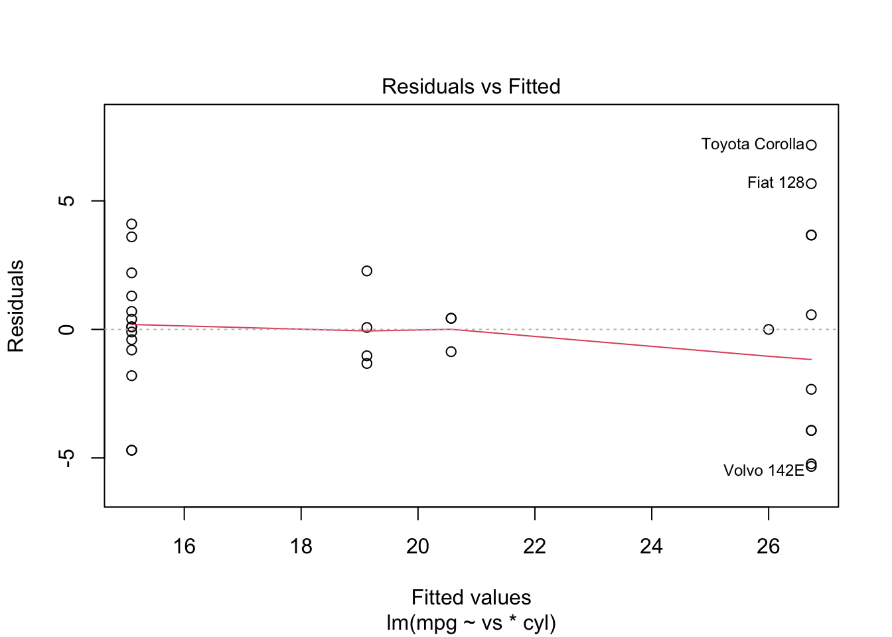

── Attaching core tidyverse packages ──────────────────────── tidyverse 2.0.0 ──
✔ dplyr 1.1.3 ✔ readr 2.1.4
✔ forcats 1.0.0 ✔ stringr 1.5.0
✔ ggplot2 3.4.3 ✔ tibble 3.2.1.9016
✔ lubridate 1.9.2 ✔ tidyr 1.3.0
✔ purrr 1.0.2
── Conflicts ────────────────────────────────────────── tidyverse_conflicts() ──
✖ dplyr::filter() masks stats::filter()
✖ dplyr::lag() masks stats::lag()
ℹ Use the conflicted package (<http://conflicted.r-lib.org/>) to force all conflicts to become errors
Registered S3 method overwritten by 'GGally':
method from
+.gg ggplot2QSURE R Training 2024
R Basics
Karissa Whiting
June 6th, 2024

R Workshop Goal
Fill potential gaps in your R knowledge and help you get properly set up to conduct impactful and reproducible research during your time at MSK (and after!)
- Short review on basic R vocab
- Skip dplyr basics but include some advanced dplyr/data cleaning
- Focus on project setup
- Focus on coding statistical analyses
- Optional 3rd session on R package making/Github
Training Agenda
- Lesson 1 – 6/6/2024
- R Basics (Quick Review)
- Lesson 2 - 6/10/2024
- Guided Example
- Project Setup & Reproducibility
- Data Cleaning
- Analyzing/Modeling the Data
- Reporting Your Results
- Guided Example
- Lesson 3 - TBD?
- Github?
- Intro to Package Development?
R, Rstudio, Open source philosophy
R is an object-oriented open-source programming language used mostly for statistical computing and graphics. Despite being OOO, R can be written in a functional style.
Open source means the original source code is freely available, and can be distributed and modified. Also, users can contribute to the usefulness by creating packages, which implement specialized functions for all kinds of uses (e.g. statistical methods, graphical capabilities, reporting tools). Added Bonus: vibrant R community!
RStudio is an integrated development environment (IDE) for R. It includes a console, syntax-highlighting code editor that supports direct code execution, as well as tools for plotting, history, debugging and work space management.

R Basics: General Things
<-is the assignment operator (=also works)
v1 <- c(1, 2, 3)
v1[1] 1 2 3
- The
%>%(pipe) from the magrittr package is a useful way to link functions together to make your code more succinct and easier to read.|>is also a pipe.
library(dplyr)
mtcars %>%
select(mpg) %>%
filter(mpg == max(mpg))?is your friend if you want to look at documentation! (e.g. type?mean()in the console)R is case sensitive, bE cArEfUl!
R Basics: Data Structures and Basic Syntax
R basic data types:
- logical (
TRUE) - integer (
1) - numeric (a.k.a. double) (
1.2) - character (
"Purple") - factor (“a”)
- complex (nobody ever uses these really)
R Basics: Beware Data Type Coercion
What is the most flexible data type?
x <- c("apple", 3)R Basics: Beware Data Type Coercion
Since columns of a data.frame must be of the same type, some data may be coerced in unexpected ways when reading in a csv or excel file.
character is often the default for mixed data types
x <- c("apple", 3)
str(x)chr [1:2] “apple” “3”
y <- c(3, 2, "twenty")
y[1] “3” “2” “twenty”
sum(y)Error in sum(y): invalid 'type' (character) of argumentR Basics: Data Structures and Basic Syntax
R has 5 basic data structures:
- vector
- matrix
- list
- array
- data.frame/tibble
R Basics: Data Structures and Basic Syntax
- vector
- only 1 data type allowed
# character
c("apple", "orange")[1] “apple” “orange”
# numeric
c(1:15)[1] 1 2 3 4 5 6 7 8 9 10 11 12 13 14 15
R Basics: Data Structures and Basic Syntax
- vector
- matrix
2d, only 1 data type allowed
letters <- c("a","b","c","d", "e", "f")
matrix(letters, nrow=2, ncol=3) [,1] [,2] [,3]
[1,] "a" "c" "e"
[2,] "b" "d" "f" R Basics: Data Structures and Basic Syntax
- vector
- matrix
- list
- any data type allowed
my_list <- list("a", 2, TRUE)
str(my_list)List of 3
$ : chr "a"
$ : num 2
$ : logi TRUER Basics: Data Structures and Basic Syntax
- vector
- matrix
- list
- array
- n-dimensions, of 1 data type
# Create two vectors of different lengths.
vector1 <- c(5,9,3)
vector2 <- c(10,11,12,13,14,15)
array(c(vector1,vector2),dim = c(3,3,2)), , 1
[,1] [,2] [,3]
[1,] 5 10 13
[2,] 9 11 14
[3,] 3 12 15
, , 2
[,1] [,2] [,3]
[1,] 5 10 13
[2,] 9 11 14
[3,] 3 12 15R Basics: Data Structures and Basic Syntax
- vector
- matrix
- list
- array
- data.frame/tibble
- any data type is allowed, but each column has to have the same type
- the most important for data analysts. Most similar to an excel spreadsheet/statistical data filehead(iris, 4)| Sepal.Length | Sepal.Width | Petal.Length | Petal.Width | Species |
|---|---|---|---|---|
Exploring Your Data: Identify Data Types
colnames()- will give you the column namesncol()andnrow()- will give you the total count of columns and rows respectivelyclass(),str(),attributes()will give you meta-information on the objecthead(),tail()show the top or bottom rows of your dfView()will show the whole dataframetable()will summarise variables
str(iris)‘data.frame’: 150 obs. of 5 variables: $ Sepal.Length: num 5.1 4.9 4.7 4.6 5 5.4 4.6 5 4.4 4.9 … $ Sepal.Width : num 3.5 3 3.2 3.1 3.6 3.9 3.4 3.4 2.9 3.1 … $ Petal.Length: num 1.4 1.4 1.3 1.5 1.4 1.7 1.4 1.5 1.4 1.5 … $ Petal.Width : num 0.2 0.2 0.2 0.2 0.2 0.4 0.3 0.2 0.2 0.1 … $ Species : Factor w/ 3 levels “setosa”,“versicolor”,..: 1 1 1 1 1 1 1 1 1 1 …
nrow(iris)[1] 150
Exploring Your Data: Identify Data Types cont.
colnames(iris)[1] “Sepal.Length” “Sepal.Width” “Petal.Length” “Petal.Width” “Species”
class(iris)[1] “data.frame”
head(iris, 3)| Sepal.Length | Sepal.Width | Petal.Length | Petal.Width | Species |
|---|---|---|---|---|
table(iris$Species)setosa versicolor virginica
50 50 50 Intro to tidyverse
The tidyverse package is a collection of R packages designed for data analysis, all of which share a similar design, grammar, and structure.
# load it
library(tidyverse)
# check out the cute logo
tidyverse_logo()⬢ __ _ __ . ⬡ ⬢ .
/ /_(_)__/ /_ ___ _____ _______ ___
/ __/ / _ / // / |/ / -_) __(_-</ -_)
\__/_/\_,_/\_, /|___/\__/_/ /___/\__/
⬢ . /___/ ⬡ . ⬢ Intro to tidyverse
- readr: data import/export
- tibble: easier to work with data frames
- dplyr: data manipulation
- tidyr: data manipulation
- ggplot2: graphics and visualization
- purrr: functional programming toolkit, replaces the need for many loops
- stringr: string manipulation
- forcats: re-imagined factor data types
There are several additional packages which are installed as part of the tidyverse, but are not loaded by default.
Intro to tidyverse
Overall tidyverse helps with code readability and has shortcuts for some common data manipulation tasks
tidyverse has been developed and significantly improved in the last few years, with a lot of ongoing work being done to further increase usability.
The R Analysis Workflow
Setup Your Project
Clean and Explore Data
tidyverse
Analyze it
statssurvival,lme4,nlmeggplot2
Report Your Findings
- R Markdown / quarto
gt/gtsummary
Iterate, Share, and Collaborate!
git/github
Clean and Explore Data
The dplyr package is a data manipulation and cleaning package. A few of the key functions (verbs) in dplyr are:
- select()
- mutate()
- filter()
- arrange()
- group_by()
- summarize()
All take a data frame as input, and return a data frame as output.
We will briefly review during case study
The R Analysis Workflow
Setup Your Project
Clean and Explore Data
tidyverse
Analyze it
statssurvival,lme4,nlmeggplot2
Report Your Findings
- R Markdown / quarto
gt/gtsummary
Iterate, Share, and Collaborate!
git/github
Model Statistical analyses
We will cover:
linear model
logistic model
survival analyses
and more….(depending on your survey results)
General modeling formula
in general
~is used to separate your outcome on the left hand side and your predictors on the right hand sideyour outcome will always be on the left side of the
~only some univariate tests like
chisq.test()do not use the~notationgeneral notation:
model(outcome ~ covariates, data)the
statspackage is already loaded in R which will make it easier to use common statistical tests
Example of linear model
- Continuous outcome
- Specifying interactions
mtcars$vs <- as.character(mtcars$vs)
mtcars$cyl <- as.character(mtcars$cyl)
mod1 <- lm(mpg ~ vs * cyl, data = mtcars)
class(mod1) # class of lm which is a list[1] “lm”
names(mod1)[1] “coefficients” “residuals” “effects” “rank”
[5] “fitted.values” “assign” “qr” “df.residual”
[9] “contrasts” “xlevels” “call” “terms”
[13] “model”
Example cont.
summary(mod1)
Call:
lm(formula = mpg ~ vs * cyl, data = mtcars)
Residuals:
Min 1Q Median 3Q Max
-5.3300 -1.4437 0.0875 1.5250 7.1700
Coefficients: (1 not defined because of singularities)
Estimate Std. Error t value Pr(>|t|)
(Intercept) 26.000 3.318 7.836 2e-08 ***
vs1 0.730 3.480 0.210 0.83541
cyl6 -5.433 3.831 -1.418 0.16757
cyl8 -10.900 3.434 -3.174 0.00374 **
vs1:cyl6 -2.172 4.305 -0.504 0.61801
vs1:cyl8 NA NA NA NA
---
Signif. codes: 0 '***' 0.001 '**' 0.01 '*' 0.05 '.' 0.1 ' ' 1
Residual standard error: 3.318 on 27 degrees of freedom
Multiple R-squared: 0.7361, Adjusted R-squared: 0.697
F-statistic: 18.82 on 4 and 27 DF, p-value: 1.696e-07Check model diagnositcs
- All models have different underlying assumptions (e.g. normality of residuals). Consider these when choosing a model and check them when model fitting.
- Check multicollinearity among your variables and how your models handles it:
library(car)
#model diagnositics
#multi colinearity
#vifmod <- car::vif(mod1) #will not work with interaction present- Check outliers and influential points (e.g. Cook’s Distance- a measure of how influential a data point is in a regression analysis).
#influencers
cutoff <- 4/((nrow(mtcars)-length(mod1$coefficients)-2)) (If the Cook’s Distance of a data point exceeds this cutoff, that data point might be considered unusually influential)
Check model diagnositcs
#many options for which!
plot(mod1, which=1, cook.levels=cutoff)
Example cont.
summary(mod1)
Call:
lm(formula = mpg ~ vs * cyl, data = mtcars)
Residuals:
Min 1Q Median 3Q Max
-5.3300 -1.4437 0.0875 1.5250 7.1700
Coefficients: (1 not defined because of singularities)
Estimate Std. Error t value Pr(>|t|)
(Intercept) 26.000 3.318 7.836 2e-08 ***
vs1 0.730 3.480 0.210 0.83541
cyl6 -5.433 3.831 -1.418 0.16757
cyl8 -10.900 3.434 -3.174 0.00374 **
vs1:cyl6 -2.172 4.305 -0.504 0.61801
vs1:cyl8 NA NA NA NA
---
Signif. codes: 0 '***' 0.001 '**' 0.01 '*' 0.05 '.' 0.1 ' ' 1
Residual standard error: 3.318 on 27 degrees of freedom
Multiple R-squared: 0.7361, Adjusted R-squared: 0.697
F-statistic: 18.82 on 4 and 27 DF, p-value: 1.696e-07- while it is nice to see the summary results, you wouldn’t present them in this fashion
Example cont.
broomandgt/gtsummarywill helpbroomis a package that helps tidy model results into data.frames- this helps with reporting and you can further format the data.frame and present with
gt
moddf <- broom::tidy(mod1) %>% #didn't load broom just called one function
mutate(p.value = round(p.value,3)) %>%
select(-std.error)
gt::gt(moddf)| term | estimate | statistic | p.value |
|---|---|---|---|
gtsummary
gtsummarymakes it easier to report model and descriptive statistics (more on this in the example)- For more helpful examples: https://www.danieldsjoberg.com/gtsummary/index.html
gtsummary
tbl_regression(mod1)| Characteristic | Beta | 95% CI1 | p-value |
|---|---|---|---|
| 1 CI = Confidence Interval | |||
Customizing gtsummary
library(labelled)
var_label(mtcars$cyl) <- "Cylinder"
newmodsum <- lm(mpg ~ vs * cyl, data = mtcars) %>%
tbl_regression() %>%
bold_labels() %>%
modify_caption("New title for model")Customizing gtsummary
newmodsum| Characteristic | Beta | 95% CI1 | p-value |
|---|---|---|---|
| 1 CI = Confidence Interval | |||
Logistic models
- binary outcome (0/1)
- R will model the ‘1’ as the event by default make sure your variable is coded correctly
mtcars$vs <- as.numeric(mtcars$vs)
mtcars$am <- as.character(mtcars$am)
mod2 <- glm(vs ~ am , data = mtcars, family = "binomial")Summarize logistic model
tbl_regression(mod2, exponentiate = TRUE) %>%
bold_labels()| Characteristic | OR1 | 95% CI1 | p-value |
|---|---|---|---|
| 1 OR = Odds Ratio, CI = Confidence Interval | |||
Survival analysis
- Outcome is both time and an event (e.g death, progression)
- Have to specify both in model
- Former MSK employee Emily Zabor put together great materials for survival analysis here:
Survival analysis
library(survival)
lung <- lung %>%
mutate(ph.ecog = as.character(ph.ecog),
sex = as.character(sex))
mod3 <- coxph(Surv(time, status)~ph.ecog+sex,data = lung)
mod4 <- survfit(Surv(time, status) ~ sex,data = lung)Survival analysis
tbl_regression(mod3, exponentiate = TRUE)| Characteristic | HR1 | 95% CI1 | p-value |
|---|---|---|---|
| 1 HR = Hazard Ratio, CI = Confidence Interval | |||
Survival analysis: Model Assumptions
- test proportional hazards
cox.zph(mod3) chisq df p
ph.ecog 5.64 3 0.130
sex 2.56 1 0.110
GLOBAL 7.83 4 0.098Tomorrow: Coding Exercise
Case Study: Diabetes Risk Factors
Github Repo With Case Study: https://github.com/karissawhiting/qsure-case-study
Check out script >
01_clean_data.R